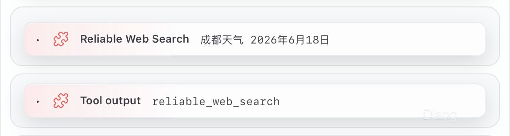

让 Agent 正确地失败：从 OpenClaw 搜索治理到 reliable-web-search

Abstract
This article traces the evolution of a reliability layer for web search in AI agents. The work began as an attempt to stabilize OpenClaw’s Gemini-backed search, but quickly exposed deeper problems: provider-specific parameters, ambiguous failure states, uncontrolled retries, proxy failures, response-envelope mismatches, tool-policy bypasses, and missing execution records. I first built an OpenClaw runtime gate that governed search calls, classified failures, bounded retries, normalized responses, and wrote auditable JSONL records. The design was then generalized into
reliable-web-search, a policy-driven multi-provider search runtime with provider priorities, structured errors, real request cancellation, circuit breaking, fallback/race/aggregate strategies, multi-credential routing, a unified CLI, and a stdio MCP server. The central lesson is simple: reliable agent systems are not defined by never failing, but by knowing precisely what failed, what evidence remains usable, what action is permitted next, and when execution must stop.
2026-06-26 更新
本文最初记录的是一个运行在 OpenClaw 内部的本地插件原型。随后,我将其中可复用的参数治理、搜索路由、错误语义、取消、熔断和诊断能力抽象为独立开源项目
reliable-web-search,并发布到 npm。当前公开版本为v0.4.0,已支持统一 CLI、stdio MCP、多 Provider、多凭据 profile、环境变量临时路由,以及 OpenClaw 等 Agent Host 的自动接入。文中的本地插件与当前 npm 包不是同一套代码:前者解释项目为什么出现,后者则是这套思路经过重构后的通用实现。
这次改造的起因很简单:OpenClaw 的联网搜索不稳定。
最开始我把它当成普通配置问题–也许 API Key 没填对,也许本地代理偶尔掉线,也许重启一下 Gateway 就恢复了。结果排查下来发现,整条 Tool Calling 链路缺的是状态语义。
搜索失败时,Agent 知道失败发生在哪一层吗?
网络没连上、Provider 服务过载、配额耗尽、鉴权失败、响应解析错误和真正没有结果,最后可能都被压缩成一句"搜索失败"。Agent 也可能进一步把"调用失败"误解成"网上没有相关资料"。一次请求该重试几次?超时后底层请求还在消耗额度吗?多个 Provider 同时可用时,按什么顺序调用?哪个结果才算真正可用?整个过程能不能回溯?
这些问题不断冒出来,任务也从"修好搜索"变成了:
为 Agent 建立一个受控、可测试、可取消、可审计,并且能够正确失败的搜索运行时。
下面是一条从故障排查、运行时治理到通用搜索基础设施的演化路径。
1. 搜索失败不是一个状态,而是一组完全不同的故障
OpenClaw 原本已经有 web_search 工具,通过 Gemini 获取联网结果。调用链看起来是这样的:
1 | Agent |
这条链路藏了一个问题:Agent 看到的是工具调用结果,但故障到底发生在哪个层级,它不知道。
排查时我遇到过这些状态:
1 | unsupported_language |
它们不是同一类失败。
1.1 参数错误、服务过载、网络故障和空结果不是一回事
统一接口容易让人以为所有搜索 Provider 接受同一组参数。实际上 Gemini、Brave、Tavily、SearXNG 这些服务,在语言、国家、时间范围、结果数量和网页索引能力上各有差异。
早期 OpenClaw 调用中,Gemini 不接受部分通用字段:
1 | language |
Agent 按统一接口传这些字段,Provider 直接拒绝请求。问题不是网络,也不是"没有结果",是:
1 | 调用参数 |
其他故障也要分开处理:
| 状态 | 实际含义 | 合理动作 |
|---|---|---|
provider_overloaded |
Provider 暂时过载 | 有限重试,或切换 Provider |
rate_limited |
触发速率或配额限制 | 尊重 Retry-After,或切换凭据/Provider |
transport_failure |
DNS、代理、连接或网络路径失败 | 短重试,之后切换故障域 |
authentication_failure |
Key 缺失、失效或权限不足 | 不原样重试;可换凭据 |
response_parse_failure |
Provider 有响应,但适配器无法理解 | 记录兼容性错误并 fallback |
no_results |
Provider 成功响应,但没有可用结果 | 不原样重试;可换索引或 Provider |
只有两个条件都满足才算 no_results:Provider 成功响应,响应结构正确解析,且没有可用内容。
请求没发出去、响应解析不了、Provider 确实返回空结果–这是三种状态。
1 | 不应原样重试同一个 Provider |
某个 Provider 返回空结果,可能只是索引覆盖范围不同、查询理解方式不同或者服务类型不同。可靠搜索不能把"当前 Provider 没找到"解释成"互联网中不存在"。
1.2 可靠性的关键是让失败决定下一步,不光是避免它
需要回答的问题就那么几个:
1 | 这次请求发出去了没有? |
这些没有稳定答案,Agent 就只能自己猜。
可靠性设计的核心也变了:
1 | "让搜索成功" |
2. 先在 OpenClaw 里造一道 Agent 绕不过去的 Runtime Gate
最直接的做法,是在 Prompt 或 Skill 中加规则:
1 | 如果搜索失败,不要编造答案。 |
这些规则当然有用,但本质上仍然只是行为建议。
模型可能遵守,也可能随着上下文增长、工具变多、任务变复杂,把规则搁在一边。更关键的是,Prompt 管不住 Agent 绕过新流程。如果 Runtime 同时暴露 web_search 和 reliable_web_search,Skill 写着"优先用后者",模型仍然可能直接调用原始工具。
所以关键不在继续扩写 Prompt,而是在工具层建立一道 Gate:
1 | Agent |
同时在权限层封死原始入口:
1 | web_search = denied |
可靠性不能依赖模型"记得遵守规则"。应该让未经治理的路径根本不存在。
2.1 先建立隔离的 Test Agent
我没有直接修改 Main Agent 或 Code Lab,而是单独建立了一个临时 test Agent,验证三件事:
- 插件是否被 OpenClaw Runtime 正确加载;
- 新工具是否真的可调用;
- 被禁止的工具是否在 Runtime 层不可调用。
当时的工具策略大致如下:
1 | { |
使用 full profile 是因为 OpenClaw 的处理顺序是：
1 | profile |
之前用 minimal 时，插件工具在 profile 阶段就被过滤掉，allowlist 无法把它加回来。最后采用：
1 | full profile |
最终 Runtime 中确认:
1 | reliable_web_search = present |
我还让 Agent 实际尝试调用 write。Runtime 返回"工具未注册",而不是由 Agent 自己说"我不会使用"。
这一步验证了一条很重要的原则:
Tool Policy 必须是运行时能力边界,不是写在 Prompt 里的行为建议。
2.2 OpenClaw 原型只治理调用,不重写整套基础设施
第一版插件注册了一个新的工具:
1 | reliable_web_search |
它没有重新实现 Gemini API,而是调用 OpenClaw 自己的搜索 Runtime:
1 | api.runtime.webSearch.search({ |
这样做是因为 OpenClaw 已经负责:
- API Key 管理;
- 代理设置;
- Provider 适配;
- 网络与安全约束;
- 引用包装;
- Runtime 返回结构;
- 基础日志。
如果插件直接对 Gemini 发起 fetch,就等于绕过了现有的运行时管理能力。这个 wrapper 只负责搜索调用的治理,而不是复制一套搜索基础设施。
原型被拆成几个部分:
1 | src/index.ts |
标准输出被设计为:
1 | { |
这里刻意没有设计 usable_for_claim。
因为:
1 | retrieval_succeeded |
搜索层负责取回数据和描述状态,不替 Agent 宣布事实成立。
2.3 参数治理:统一请求经过 Provider capability check
OpenClaw 原型中,调用前先经过:
1 | sanitizeSearchArgs(provider, args) |
输入:
1 | { |
如果当前 Provider 不支持 country 和 language,发送前变成:
1 | { |
同时记录:
1 | { |
这不只是删字段,而是建立一条显式转换链:
1 | 用户意图 |
这个思路后来保留到 reliable-web-search。每个 Provider 都有显式 capabilities,系统可以判断它属于完整网页搜索、AI Search 还是 Instant Answer,是否支持 freshness,以及最大结果数量。
2.4 失败语义、有限重试和停止条件
原型阶段,我将错误归纳为:
1 | provider_overloaded |
随后明确区分两个经常被混在一起的动作:
1 | retry |
合理策略大致如下:
1 | provider_overloaded |
期间还修复过一个 attempts 计算问题,最终明确:
1 | attempts |
真实网络失败时,结果类似:
1 | { |
它表达的是:
1 | 首次调用失败 |
可靠性不是死磕到成功,而是知道什么时候继续、什么时候切换、什么时候结束。
2.5 最难判断的不是失败,而是失败发生在哪一层
排查时最容易混淆的是:
1 | 网络失败 |
一开始 Gemini Runtime 返回:
1 | { |
wrapper 检查的却是:
1 | rawRecord.content |
真正内容在:
1 | rawRecord.result.content |
一个包含正文的成功响应,被误判成 no_results。
正确做法是先解开 Runtime envelope:
1 | const rawData = |
之后所有内容检测、引用读取和标准化都基于 rawData。
教训:响应结构本身也是运行时契约。适配器看不懂响应,就该返回 parse failure,而不是解释成空结果。
期间还出过一次事故–用宽泛正则清理调试代码时,顺手删掉了刚修好的 envelope 解包逻辑。之后我给自己加了一条规矩:
1 | 不使用宽泛正则批量改源码; |
最终,真实调用链闭环为:
1 | Agent |
2.6 基础设施故障不会因为代码正确而消失
当时另一个反复出现的变量,是本地代理:
1 | 127.0.0.1:17891 |
只要代理进程退出,Gateway 仍然尝试连接原端口,最终得到:
1 | ECONNREFUSED |
这解释了为什么同一套代码可能几分钟前成功、几分钟后又失败。
最终确认的代理配置是:
1 | 代理模式:规则 |
最需要区分的是:
1 | 关闭窗口 |
reliable_web_search 可以正确识别代理故障,却不能自动恢复一个已经退出的代理服务。
这也是可靠性工程的边界:软件可以描述基础设施失败、隔离影响并选择后续策略,但不能假装依赖永远可靠。
2.7 JSONL:让搜索离开不可追踪的对话
原型会把每次搜索追加到:
1 | ~/.openclaw/workspace/90_system/search/search_runs.jsonl |
成功记录类似:
1 | { |
网络失败也会留下记录:
1 | { |
过去 Agent 只丢一句"搜索失败",想追问都不知道从哪里下手:调用了哪个 Provider?实际调用了几次?是代理问题、限流还是解析失败?哪些参数被删除?有没有获得可用内容?总耗时多少?
有了结构化记录,这些问题都有答案。
日志中刻意不保存 API Key、Authorization Header、完整 Provider 原始响应和完整搜索正文。
不过 query 本身也可能包含姓名、文件路径、项目代号等敏感信息。正式部署时,日志系统仍应支持关闭 query 日志、对 query 脱敏、只保存 query hash、设置日志保留期限。
可审计不意味着无限记录。观测能力同样要服从隐私边界。
3. 从 OpenClaw 插件到通用搜索运行时
OpenClaw 原型已经解决了当时的问题,但它仍然和本地环境高度绑定:
- 依赖 OpenClaw Runtime;
- Provider 路由写在插件内部;
- JSONL 路径固定在 workspace;
- 错误类型和返回结构服务于特定 Agent;
- 其他 Node.js 应用无法直接复用。
真正值得抽取的问题其实是:
1 | 如何选择 Provider? |
于是这部分能力被抽象成独立项目:
1 | reliable-web-search |
它的定位不再是"OpenClaw 搜索插件",而是应用与多个搜索 API 之间的策略运行时:
1 | Application / Agent |
3.1 Provider registry:显式优先级、能力和配置门
第一版按注册顺序排列,结果有时让无需密钥但能力有限的 Provider 排到前面。
现在每个 Provider 都具有:
1 | priority |
registry 只加入真实配置完成的 Provider,并按优先级路由。SearXNG 只有显式配置 Base URL 才算可用,不再默认向本机 localhost 发请求。
如果用户写错 Provider 名称:
1 | providers: ["brvae", "tavily"] |
系统会给出接近的拼写建议,而不是静默忽略。
当前内置八个 Provider:
| Provider | 类型 | 当前定位 |
|---|---|---|
| Brave | 完整网页搜索 | Verified |
| Tavily | 面向 LLM 的网页搜索 | Verified |
| Bocha | 完整网页搜索 | Experimental |
| Metaso | AI Search | Experimental |
| Gemini | AI Grounding | Verified |
| SerpAPI | 多搜索引擎适配 | Verified |
| SearXNG | 自托管聚合搜索 | Verified |
| DuckDuckGo | Instant Answer | 零配置兜底 |
DuckDuckGo 使用 Instant Answer API,不是完整网页搜索,更适合百科式主题摘要,因此被放在低优先级兜底位置。
3.2 三种执行策略:fallback、race、aggregate
三种模式:
1 | fallback |
fallback
按优先级顺序调用 Provider:
1 | Provider A |
race
同时启动多个 Provider,第一个获得可用结果的请求成为 winner:
1 | A ─────────────── |
这不是简单调用 Promise.all()。winner 一旦确认,其他 Provider 的独立 AbortController 会立即触发,避免落败请求继续占用连接和额度。
aggregate
并发调用多个 Provider,并汇总成功结果。当前版本已经完成统一执行和状态诊断,但复杂的 URL canonicalization、跨 Provider 去重、融合排序和域名多样性控制仍属于后续工作。
3.3 超时现在真的会取消请求
早期实现使用:
1 | Promise.race([providerPromise, timeoutPromise]) |
这只会让上层停止等待,底层 fetch 仍可能继续运行。
当前实现通过 AbortController 将 timeout 传入实际请求:
1 | 达到超时 |
测试会直接验证 Provider 能观察到:
1 | signal.aborted === true |
这解决了 Agent 系统里很隐蔽的一类成本问题:
表面已经超时,后台请求还在继续消耗额度。
3.4 结构化 ProviderError 与 Circuit Breaker
Provider 不再只抛一个字符串,而是返回结构化错误:
1 | providerId |
系统据此区分:
1 | 401 auth_failed |
并决定要不要重试、要不要 fallback、要不要切换凭据、要不要计入熔断器、是否需要等待、最终返回什么状态。
鉴权错误不应该当成瞬态服务故障记入熔断器。网络错误、超时和 5xx 才真正反映 Provider 健康状态。
熔断器有 closed、open、half-open 三种状态。失败达到阈值后:closed → open → 暂时跳过该 Provider → recovery timeout → half-open 试探 → 成功后 closed。
当前实现验证了调用级配置能真正进入 breaker–比如 failureThreshold = 1、recoveryTimeout = 100ms–不只是类型定义里有。
3.5 结果契约与 AttemptRecord
最终返回值不只包含结果,还包含完整的执行元数据:
1 | interface ReliableSearchResult { |
每次尝试都会记录:
1 | Provider |
例如:
1 | { |
这样一次搜索不只告诉调用者"最后谁成功了",还还原了整条执行路径。
缓存命中也会明确返回:
1 | cacheHit: true |
并保持和实时调用一致的主要字段,避免调用者因为结果来自缓存而拿到另一套残缺结构。
3.6 发布包不只验证源码,而是验证真实安装路径
项目通过 tsup 同时输出:
1 | ESM |
发布前不仅执行源码测试,还验证:
1 | ESM import |
v0.4.0 发布前完成:
1 | 196 tests |
这些测试覆盖了真实行为：
- 空结果会继续 fallback；
- timeout 会真正 abort；
- race winner 会取消 loser；
- attempts 顺序稳定；
- breaker 自定义配置真实生效；
- cache hit 返回完整结构；
- ESM/CJS 包可以真实加载；
- 打包后的 CLI 和 MCP Server 可以启动；
- 多凭据 route 能被 MCP 正确读取。
4. v0.4.0:从"多个 Provider"走向"多个凭据、统一 CLI 与 MCP"
到了 v0.4.0，问题从"Provider A 挂了切换 Provider B"变成了更贴近实际使用的场景：
1 | 同一个 Provider 可能有多个合法凭据； |
因此,配置模型从:
1 | Provider |
升级为:
1 | Provider Definition |
例如:
1 | tavily.default |
4.1 两层故障决策:credential failover 与 provider fallback
v0.4.0 明确区分两层切换。
第一层是同一 Provider 内的凭据切换:
1 | tavily.default |
第二层是 Provider 级 fallback:
1 | tavily.* |
规则如下:
| 错误类型 | 后续动作 |
|---|---|
rate_limited |
尝试同 Provider 的下一个 credential |
quota_exhausted |
尝试同 Provider 的下一个 credential |
authentication_failure |
当前 credential 标记失败,尝试同 Provider 其他凭据 |
network_error |
按 retry/breaker 处理后切换 Provider |
timeout |
按 retry/breaker 处理后切换 Provider |
server_error |
按 retry/breaker 处理后切换 Provider |
provider_overloaded |
按 retry/breaker 处理后切换 Provider |
no_results |
直接切换 Provider |
unusable_results |
直接切换 Provider |
| 用户取消 | 立即停止 |
这里有一个刻意的限制:
默认实现 failover,不做 round-robin。
多个凭据的目的是备用、合法的团队 workspace、Key rotation 和故障隔离,不是让系统无条件在不同账号之间轮询消耗额度。
4.2 循环式 Setup Wizard
v0.3.0 的 rws setup 只能选择一个 Provider、输入一个 Key,然后结束。v0.4.0 改成循环式流程:
1 | 添加 Provider |
使用方式:
1 | npm install --global reliable-web-search |
在 macOS 或 Linux 上,如果系统全局目录无写权限,可以安装到用户目录:
1 | npm install --global \ |
再把下面路径加入 PATH:
1 | export PATH="$HOME/.local/bin:$PATH" |
不需要使用:
1 | sudo npm install -g |
向导能够连续添加:
1 | tavily.default |
并在最终确认路由后,检测 OpenClaw、Codex、Claude Code 或 Generic MCP 环境。
4.3 CLI 管理能力
除了 setup,v0.4.0 还提供独立管理命令:
1 | rws credentials list |
1 | rws routes list |
诊断命令:
1 | rws doctor |
其中:
1 | doctor |
最后一个命令会消耗每个凭据的真实额度,因此不应作为日常检查默认执行。
4.4 环境变量成为不落盘的临时路由
如果环境中存在:
1 | export TAVILY_API_KEY="..." |
系统自动产生一个高优先级路由 tavily.env。它有这些特征:不写入 config.json,不写入 credentials.json,删除环境变量后自动消失,与本地相同 Key 去重,routes list 中标记为 [env],不能通过 credentials remove 删除。
CI、服务器和临时开发环境可以直接注入 Key,无需改写本地凭据文件。
4.5 凭据与配置分离
v0.4.0 将数据分开保存:config.json 放 routes、优先级、启停状态等非敏感配置;credentials.json 放 credential profiles 和 API Key。
安全约束包括:Unix 下 credentials.json 权限为 0600;API Key 不进入 Host MCP 配置、AttemptRecord、stdout、日志或诊断输出;setup 和 doctor 只显示 label 或掩码;v1 → v2 迁移会创建备份;损坏文件不会被自动覆盖。
4.6 一个工具接入多个 Agent Host
v0.3.0 开始,项目提供 stdio MCP Server:
1 | rws mcp |
Agent Host 只需要注册:
1 | { |
当前支持状态为:
| Host | 状态 |
|---|---|
| OpenClaw | Verified |
| Generic MCP | Standard MCP |
| Codex | Beta |
| Claude Code | Beta |
对 Agent 来说,始终只看到一个搜索工具:
1 | reliable_web_search |
底下配置了多少 Provider、多少凭据、是否发生 fallback,Agent 不需要关心具体接入细节,只需要读取结构化结果。
在 OpenClaw 实机验证中,新版 MCP 工具最终返回:
1 | providerPath: ["tavily.default"] |
这也暴露过一个迁移问题:旧版 OpenClaw 本地插件仍然注册了同名工具,导致模型先调用旧 Gemini 路由,再调用新版 MCP。最终通过禁用旧 0.1.0 插件、保留 rws mcp 注册,才让 OpenClaw 只剩新版工具。
这件事再次证明:
工具发现、工具命名和运行时所有权,同样属于可靠性边界。
5. 这套系统解决了什么,又仍然没有解决什么
从原型到 SDK,项目经历了三次明显变化。
原型之前
1 | 搜索成功 |
OpenClaw Runtime Gate
1 | Agent |
当前通用运行时
1 | Application / Agent |
可以将这次演化总结为:
| 第一阶段 | 当前阶段 |
|---|---|
| 搜索工具 wrapper | 搜索可靠性运行时 |
| 单一 OpenClaw 环境 | 通用 Node.js SDK + CLI + MCP |
| Gemini 为主、Tavily 兜底 | 八个 Provider 的统一 registry |
| 单 Provider 单 Key | 多 Provider、多 credential profile |
| 普通错误分类 | 结构化 ProviderError |
| 上层 timeout | 底层真实取消 |
| 简单 fallback | fallback / race / aggregate |
| JSONL 本地审计 | 标准化 AttemptRecord[] |
| 工具权限治理 | Provider、凭据与 Host 三层治理 |
| 能搜索吗 | 是否值得继续、切换或停止 |
它仍然没有解决所有搜索问题。
当前版本还没有跨 Provider URL canonicalization、复杂重复结果融合、相关性重排序、域名多样性控制、round-robin 或健康权重、完整用量统计与成本预算、云端凭据管理、Web UI、通用 telemetry hooks。
这些能力都有价值,但不需要一次性全部实现。更合理的顺序是发布、实际使用、观察真实故障、根据数据决定下一步。
出现重复链接再做融合。多个 Agent 互相污染再引入更强实例隔离。费用失控再加预算治理。真实用户确实需要 GUI 再考虑 Web UI。
可靠系统不等于功能最多的系统,而是承诺过的行为都能被测试证明。
最后真正学到的东西
最消耗精力的不是写代码,是判断问题出在哪一层:
1 | 代码错误? |
有几次看起来像"刚修好又坏了"。
一次是旧的 transport_failure 和新成功记录同时出现在 tail 里。一次是 wrapper 检查错了对象层级。一次是关代理窗口时顺手退出了后台进程。还有一次,新版 MCP 已经正常工作,但旧 OpenClaw 插件仍在抢占同名工具。
这些经历让我越来越确信:Agent 工程的核心不只是模型能不能完成任务,而是系统能不能准确描述自己当前的状态。
一个可靠的 Agent 不能只有"成功"和"失败"两种答案。
它至少应该知道这些:
1 | 请求到底发出去了没有? |
这些问题都有明确答案,Agent 才开始从一个聊天界面变成一个可被信任的系统。
结语
开头只是想修好 OpenClaw 的联网搜索。
过程中绕过了代理、Tool Policy、插件加载、Runtime envelope、Provider 参数、重试循环、fallback、日志路径、Agent 权限、CLI 安装、MCP 注册和旧工具冲突。后来又把这些抽象成 registry、结构化错误、真实取消、race、熔断器、多凭据路由、稳定诊断和统一 Host 接入,最终发布成独立的 reliable-web-search。
回头看,真正建起来的不是"永远不会失败的搜索工具":
1 | 一个 Agent 绕不过去的治理入口 |
可靠性从来不是消灭失败。
可靠性是让失败拥有明确的类型、边界、证据和后续动作;让系统知道自己没拿到什么,也知道什么时候不该继续假装成功。
至少现在,某一个 Provider、某一把 Key,甚至某一条网络路径挂掉,都不再意味着整条搜索链路走到终点。